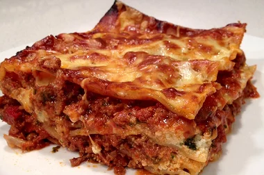

Lasagna

Kim's lasagna is a delicious italian lasagna dish that serves 10 people.
Ingredients
- 1lb bult italian sausage
- 1lb ground beef
- 1 cup chopped onion
- 4 cloves garlic, minced
- 2 (8 oz) cans tomato sauce
- 1 (14 oz) can crushed tomatoes
- 1 (14 oz) can Italian-style crushed tomatoes
- 2 (6 oz) cans tomato paste
- 3 tablespoons chopped fresh basil
- 1/2 cup grated parmesean cheese
- 12 lasagna noodles
- 1 (15 oz) container ricotta cheese
- 1 (16 oz) package shredded mozzerella cheese, divided
- 3/4 cup grated parmesean cheese, divided
Steps
- Brown sausage and ground beef. Stir in tomota sauce, crushed tomatoes, tomato paste, basil and 1/2 cup Parmesean cheese into meat mixture. Bring to boil, reduce head to low, and simmer sauc for at least 1 hour.
- Place lasagna noodles into a deep bowl and cover with very hot tap water, let soad for 30 minutes
- Beat egg in a bowl and stir ricotta cheese, 2tbsp parsley, and nutmeg until thoroughly combined
- Preheat oven to 375 degrees F
- Build lasagna in baking dish and cover with aluminum foil
- Bake until lasagna noodles are tender, about 50 minutes. Remove foil and bake until cheese topping is lightly browned, 15-20 minutes